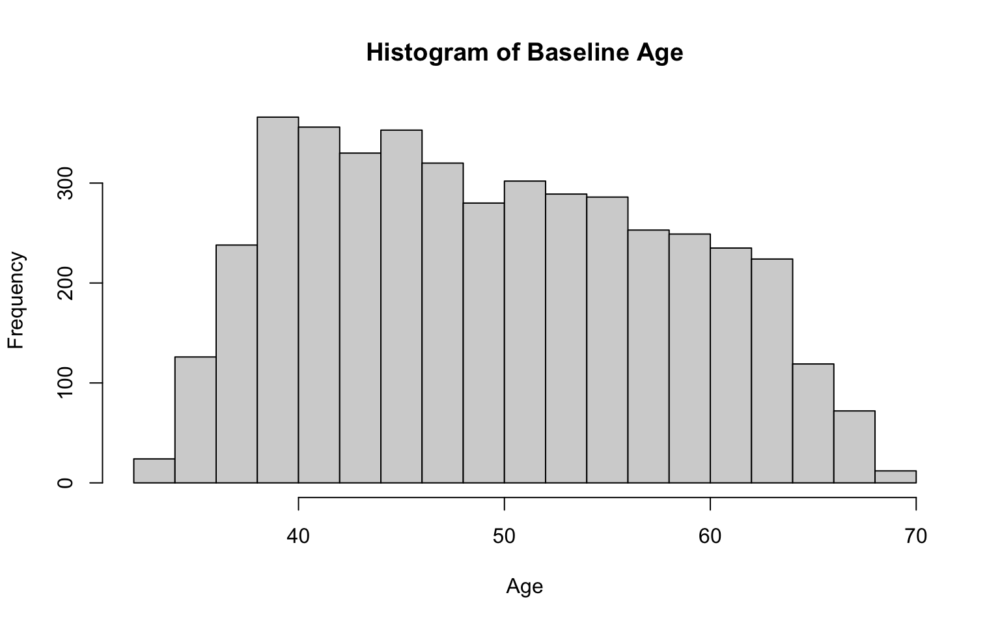
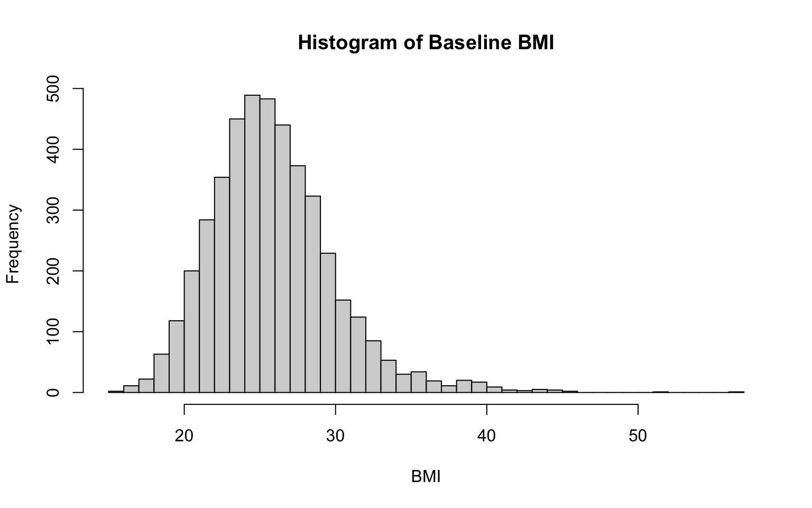
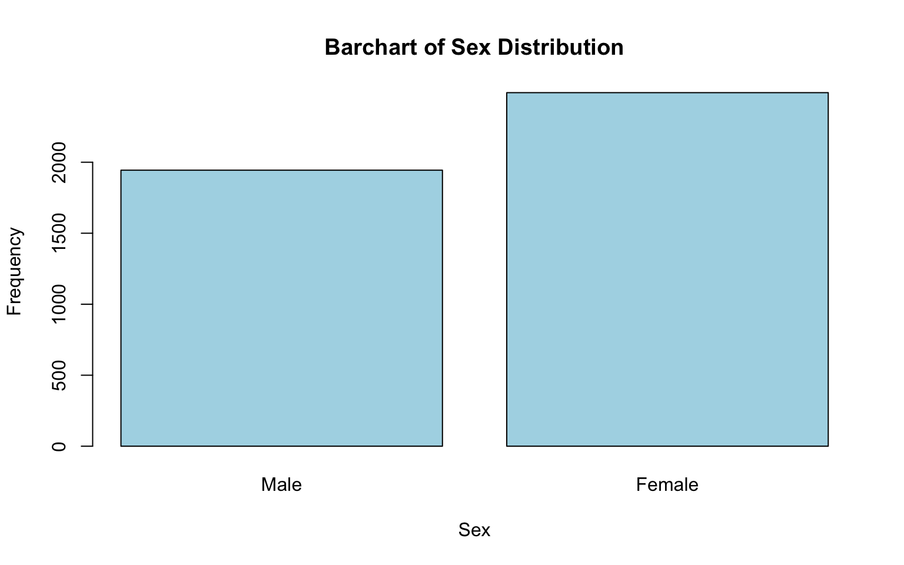
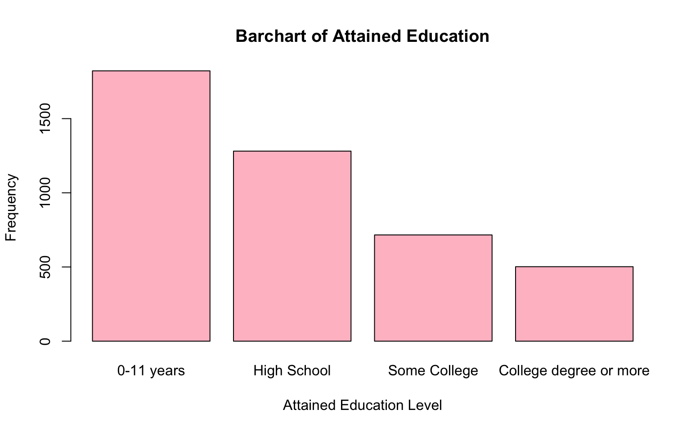
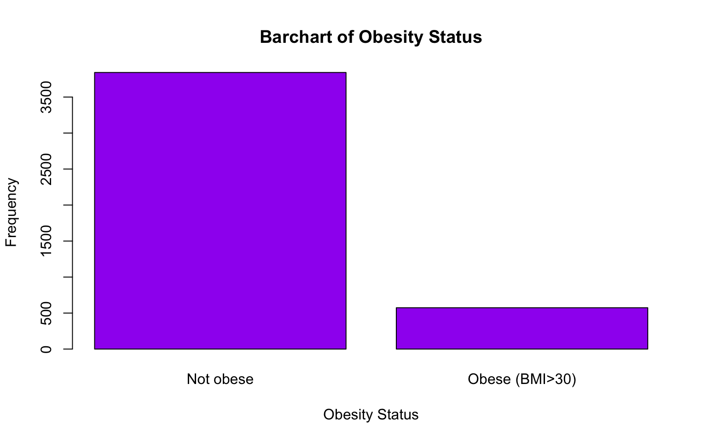
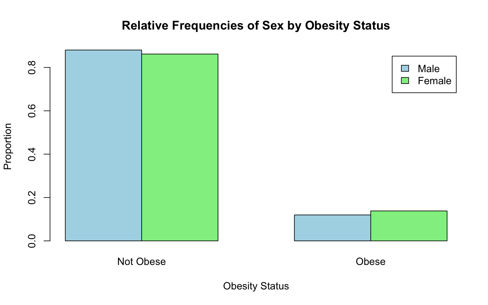

Lab 2: Exploratory Data Analysis
Jenny Wagner, PhD, MPH
Department of Public
Health
California State University, Sacramento
Introduction
Exploratory Data Analysis (EDA) is the process of examining and summarizing a dataset to identify patterns, relationships, and potential issues before performing more complex analyses. It involves techniques like calculating summary statistics, visualizing data distributions, and identifying outliers and missing values. EDA is important because it:
- Helps us better understand the structure and key characteristics of a dataset.
- Detects potential errors, inconsistencies, and missing values that may need to be addressed.
- Guides analysis and suggests appropriate statistical methods and models for further analysis.
- Creates visual and numerical summaries that make data more understandable to others.
Objectives
After completing Lab 2, you will be able to:
- Generate and interpret summary statistics and frequency distributions.
- Explore the distribution of variables using descriptive plots.
- Detect potential outliers and understand their implications for analysis.
- Explore relationships between variables.
- Identify and handle missing values within a dataset.
Tasks
Suppose you are a public health researcher interested in studying the relationship between lifestyle factors and cardiovascular health. Using data from the Framingham Heart Study, you aim to explore key risk factors - such as sex, age, body mass index (BMI), and smoking behavior - in the baseline sample to identify patterns and relationships that could inform prevention strategies. Before beginning any in-depth analyses, you plan to conduct an exploratory data analysis (EDA) to summarize the data, visualize distributions and relationships, and identify potential issues. The EDA process will help you become familiar with the data and guide future analyses.
When you are ready to start Lab 2:
- First create a new R Markdown file using the instructions on the
Assignment Guidelines page. Save this
.Rmdfile in a folder dedicated to Lab 2 materials. - Next, save the modified dataset you created in Lab 1 - called “frmgham2_p1.csv” - in the same folder as your Lab 2 R Markdown file.
- Finally, proceed to read through and carry out each of the tasks detailed below.
As you begin Lab 2, notice that the first few tasks closely mirror those of Lab 1. Remember that, in general, you will always start a new assignment in this way - by loading packages, setting your working directory, and importing the dataset(s) you need.
1. Install and load R packages
In Lab 2, we will mostly be using functions contained within packages
you have already installed (e.g., tidyverse). We will use
one new package called naniar which contains many functions
for investigating missing data. Start by entering the following into
your Console (bottom-left window) to install this package:
install.packages("naniar")
Remember that packages only need to be installed once;
however, they must be loaded every time you start a new R
session using the library() function as follows:
2. Set your working directory
Set your working directory using the setwd() function -
but remember to paste your own file path between the parentheses (return
to Lab 1 and/or the RStudio Video Tutorial on Canvas if you need
detailed instructions).
setwd("YOUR FILE PATH HERE")3. Import the dataset into RStudio
Use the read.csv() function to import the
modified dataset you created in Lab 1, called
“frmgham2_p1.csv”.
Recall that you exported the “frmgham2_p1.csv” dataset from RStudio in the final task of Lab 1. If you carried out this task correctly, the dataset will be located in your Lab 1 working directory (i.e., the folder containing your Lab 1 materials). To utilize this dataset for Lab 2, you will need to move or copy the file over to the folder you set as your working directory in the above step. Consider this an exercise in locating and organizing files on your computer.
4. Select variables of interest
For Lab 2, we will focus on a handful of variables of interest. Be sure to refer back to the data documentation (linked on the Lab 2 assignment page on Canvas) for more information about these variables:
RANDID: participant identification numberSEX: sexAGE: ageBMI: body mass indexTOTCHOL: serum total cholesterolEDUC: attained education (renamed in Lab 1)OBESE: obesity status, where obese means BMI>30 (created in Lab 1)
Let’s start by creating a new object called data_sub
containing only these variables. To do this, we will use the
select() function, which is used to select specific columns
(variables) from a dataset. It allows you to keep only the columns you
need for analysis (or drop those you don’t need), which can help make
your dataset more manageable and focused:
# select variables of interest and save in a new data frame
data_sub <- data %>% select(RANDID, SEX, AGE, BMI, TOTCHOL, EDUC, OBESE)This code creates a smaller, more focused dataset (called
data_sub) containing only the variables of interest, listed
above. Let’s break down this line of code:
select(RANDID, SEX, AGE, BMI, TOTCHOL, EDUC, OBESE): Selects the specified columns from the original dataset. Only these columns will be included in the new dataset (data_sub).data %>%: Passes the object calleddata(our original dataset) into theselect()function using the pipe operator (%>%). Remember, this is like telling R, ‘use this dataset and then select only these variables.’data_sub <-: Creates a new object calleddata_subto store the result of the operation. By saving the subsetted data with a new name, the original dataset (calleddata) remains unchanged and available to us if we need it.
After running the code chunk above, you should see a new object in
your Environment (top-right window) called data_sub (when
running your own analyses, you can use whatever names make sense to you)
with 4434 observations and 7 variables. Click on the
data_sub object to view it in a new tab. You should see a
spreadsheet open containing only the 7 variables we selected.
5. Identify and modify variable types
Like we did in Lab 1, we should identify variable types using the
class() function and modify them as needed. Let’s check the
variable type for each variable in data_sub. Below, you
will see the code used to check the variable type and output for each
variable:
## [1] "integer"## [1] "integer"## [1] "numeric"## [1] "integer"## [1] "integer"## [1] "integer"We see that all variables are coded as “integer” variables aside from
BMI, which is coded as “numeric”. As discussed in Lab 1, we
should modify variable types when needed to ensure variables are treated
appropriately - as numerical or categorical - in our analyses. For
example, we know the values for sex (SEX), attained
education (EDUC), and obesity status (OBESE)
represent categories rather than numerical quantities. As such, we
should modify these variables accordingly using the
factor() command (see Lab 1 for a detailed explanation of
the code):
# convert sex to unordered factor variable
data_sub$SEX <- factor(data_sub$SEX,
levels=c("1", "2"),
ordered=FALSE)# convert attained education to ordered factor variable
data_sub$EDUC <- factor(data_sub$EDUC,
levels=c("1", "2", "3", "4"),
ordered = TRUE)# convert obesity status to unordered factor variable
data_sub$OBESE <- factor(data_sub$OBESE,
levels=c("0", "1"),
ordered=FALSE)You might be thinking, “wait, didn’t we already convert sex and attained education to factor variables in Lab 1? Why are they integer variables once again?” Note that when you import a CSV file, R will automatically interpret variables with numerical values as either “integer” or “numeric” - R does not know that the values represent categories until we specify this. So, any time you bring in a new CSV file, you will need to go through the process of identifying and modifying variable types as needed.
6. Generate and interpret numerical summaries
Exploratory data analysis (EDA) typically involves a combination of: (1) numerical summaries, and (2) descriptive plots or visuals. We will explore both in this Lab, beginning here with numerical summaries. This means generating summary statistics for numerical variables and frequency distributions for categorical variables.
Our data_sub object contains three numerical variables
(excluding participant ID number) - age (AGE), body mass
index (BMI), and total cholesterol level
(TOTCHOL) - and three categorical variables - sex
(SEX), attained education (EDUC), and obesity
status (OBESE).
To understand the distributions of these variables, the
summary() function is a great place to start:
## RANDID SEX AGE BMI TOTCHOL
## Min. : 2448 1:1944 Min. :32.00 Min. :15.54 Min. :107
## 1st Qu.:2440336 2:2490 1st Qu.:42.00 1st Qu.:23.09 1st Qu.:206
## Median :4972848 Median :49.00 Median :25.45 Median :234
## Mean :4987278 Mean :49.93 Mean :25.85 Mean :237
## 3rd Qu.:7463577 3rd Qu.:57.00 3rd Qu.:28.09 3rd Qu.:264
## Max. :9999312 Max. :70.00 Max. :56.80 Max. :696
## NA's :19 NA's :52
## EDUC OBESE
## 1 :1822 0 :3841
## 2 :1281 1 : 574
## 3 : 716 NA's: 19
## 4 : 502
## NA's: 113
##
## The summary() function in R provides a quick overview of
the dataset by summarizing each variable in the specified dataset (in
this case, data_sub). For numerical variables, it
calculates key descriptive statistics, and for categorical variables, it
provides frequency counts for each category. The output also provides
the number of missing values for each variable (more on missing data
later). After running the above code chunk, you will see:
- For numerical variables:
- Minimum (Min): The smallest value in the variable.
- 1st Quartile (1st Qu.): The value below which 25% of the data fall.
- Median: The middle value when data are sorted.
- Mean: The average of the values.
- 3rd Quartile (3rd Qu.): The value below which 75% of the data fall.
- Maximum (Max): The largest value in the variable.
- NA’s: The number of missing values.
- For categorical variables:
- The output will list each category and its corresponding frequency (the number of occurrences of that category in the dataset).
- NA’s: The number of missing values.
For example, we can see that the baseline sample contains 1944 males,
where SEX=1, and 2490 females, where SEX=2
(How do we know which category corresponds to each value? See the data
documentation). We can also see that the minimum and maximum ages in the
sample are 32 and 70, respectively, with a mean of 49.93 years and
median of 49 years. There are no missing values for sex or age.
Examine the output and answer the following:
- What is the mean BMI in the baseline sample?
- How many missing values are there for BMI in the baseline sample?
- How many participants are defined as obese (BMI>30) at baseline?
As stated previously, the summary() function is a great
starting point, since it provides a summary for each variable in the
dataset. However, the summary() function does not
necessarily provide all of the information you might need. There are
several functions you might use to generate summary statistics and
frequency distributions.
For example, suppose you just want the mean and standard deviation
for BMI. You can obtain these values using the mean() and
sd() functions as follows:
# obtain mean and standard deviation for BMI in the baseline sample
mean(data_sub$BMI, na.rm = TRUE)## [1] 25.84616## [1] 4.101821When you run the above code chunk, you will see the mean and standard
deviation of BMI in the Console (bottom-left window). Notice that, when
using the mean() and sd() functions, you need
to specify both the dataset you want R to use (in this case,
data_sub), and the specific variable of interest (in this
case, BMI), separated by the $ operator.
What does
na.rm = TRUEmean? This argument is used to remove missing values (NAs) before performing a calculation. Some functions in R will automatically ignore missing values, while others require you to specify this explicitly. I know, kind of annoying. Themean()andsd()functions are two examples in which R will return an “NA” result in the presence of missing values - unless you explicitly tell R to ignore them. More on missing values later in this Lab.
Suppose you want to generate the frequency distribution for a single
categorical variable - say, obesity status. You can obtain the frequency
distribution using the table() command as follows:
##
## 0 1
## 3841 574When you run the above code chunk, you will see the frequencies for
each category (0=not obese; 1=obese) in the Console (bottom-left
window). As above, when using the table() command, you need
to specify both the dataset you want R to use (in this case,
data_sub), and the specific variable(s) of interest (in
this case, OBESE), separated by the $
operator.
7. Explore the distribution of variables using descriptive plots
Exploring the distribution of variables using descriptive plots complements summary statistics and frequencies by providing a visual representation of the data. While descriptive statistics and frequencies offer numerical summaries, plots can help us understand the overall shape of a distribution and reveal patterns, trends, and anomalies that numbers alone may not capture. For example, histograms or boxplots of numerical variables can highlight skewness, outliers, or multimodal distributions, while bar charts of categorical variables can make the relative prevalence of categories easier to interpret. Visualizing data can also help identify issues like data entry errors or unusual variability in addition to making it easier to communicate findings to others.
Histograms
Histograms are useful visuals for numerical variables. A histogram shows the frequency of observations across “bins” of values and is best for assessing the shape and modality of a variable. For example, if a dataset includes ages ranging from 18 to 90, using bins of 5 years (e.g., 18–22, 23–27, etc.) might make sense to align with common age groupings in research. This would require about 15 bins, where the frequencies generated would be the number of people with ages in each bin.
Let’s generate a histogram for each numerical variable of interest,
beginning with age, using the hist() function:
# histogram for age
hist(data_sub$AGE,
breaks = 15,
main = "Histogram of Baseline Age",
xlab = "Age",
ylab = "Frequency")
Let’s break down each part of the code above:
hist(data_sub$AGE...): Creates a histogram of theAGEvariable from thedata_subobject, showing the frequency of different age ranges.breaks = 15: Specifies the number of bins (or intervals) for grouping the ages. Settingbreaks = 15creates 15 bins.- Note: There is no single “correct” number of bins; it is often a good idea to experiment with different numbers of bins to see which is most suitable to your data. When deciding on the number of bins, you might consider the size of your dataset and range of possible values. For example, a large dataset may benefit from more bins to capture finer details in the distribution, particularly with a wide range of values. A smaller dataset, on the other hand, may require fewer bins to avoid over-fragmentation. In general, too few bins may oversimplify the distribution and hide important patterns, while too many bins can make it difficult to discern the overall shape of the distribution. The key point - use your best judgement when deciding on the optimal number of bins for a particular variable.
main = "Histogram of Baseline Age": Sets the title of the histogram to “Histogram of Baseline Age.”xlab = "Age": Labels the x-axis as “Age,” so we know what the bins represent.ylab = "Frequency": Labels the y-axis as “Frequency,” which shows the number of observations in each bin.
After running the code chunk above, you should see a histogram of age appear in the plots window (bottom-right). The distribution of age appears to be generally mound-shaped with little skewness.
Two additional examples, for BMI and total cholesterol:
# histogram for BMI
hist(data_sub$BMI,
breaks = 30,
main = "Histogram of Baseline BMI",
xlab = "BMI",
ylab = "Frequency")
# histogram for total cholesterol level
hist(data_sub$TOTCHOL,
breaks = 30,
main = "Histogram of Baseline Total Cholesterol Level",
xlab = "Total Cholesterol Level",
ylab = "Frequency")Notice that the only changes we needed to make to the code to create these additional historgrams were to the specific variable of interest (specified in the first line of code in each chunk) and the labels (so that our x-axis and chart titles accurately reflect the variable at-hand).
From the histograms, we see that both BMI and total cholesterol level are slightly right-skewed, meaning the peak of the data is on the left, and the values taper off toward the right. In both cases, most of the data falls within a bell-shaped curve, but there are some extreme values to the right. Note that in a right-skewed distribution, the mean is greater than the median. This happens because the long tail on the right pulls the mean higher while the median is relatively unaffected.
Boxplots
Like histograms, boxplots are useful visuals for numerical variables. A boxplot provides a visual summary of key statistics (e.g., median, quartiles, range) and is ideal for identifying outliers and comparing the distribution of a numerical variable across groups (more on this later).
Let’s generate a boxplot for each numerical variable of interest,
beginning with age, using the boxplot() function:
Let’s break down each part of the code above:
boxplot(data_sub$AGE...): Creates a boxplot of theAGEvariable from thedata_subdataset. The boxplot summarizes the distribution of ages, showing the median, interquartile range (IQR), and min/max values. Boxplots will also typically reveal any potential outliers, which will be represented by open circles, but we don’t see any in this case.main = "Boxplot of Baseline Age": Sets the title of the plot to “Boxplot of Baseline Age” so that we have context for what the plot represents.ylab = "Age": Labels the y-axis as “Age,” indicating that the values displayed on the axis correspond to participant ages.
After running the code chunk above, you should see a boxplot of age appear in the plots window (bottom-right). The distribution of age appears to be generally symmetrical (with mean equal to median) with no outliers.
Two additional examples, for BMI and total cholesterol level:
# boxplot for total cholesterol level
boxplot(data_sub$TOTCHOL,
main = "Boxplot of Baseline Total Cholesterol Level",
ylab = "Total Cholesterol Level")Again, notice the changes in the code. To create a new boxplot for a different variable, we only need to change the specific variable indicated on the first line of each code chunk, as well as the correponding title and axis labels.
As expected given our examination of their histograms, both BMI and total cholesterol level are right-skewed. We can see this reflected in their respective boxplots because there are many extreme values above the median. Every observation shown by an open circle on the boxplot figures represents an outlier. If you’re doing this by hand, there are a couple of steps involved in identifying which points are outliers (while we won’t do anything “by hand” in this course, it is important to understand the process):
- Calculate the Interquartile Range (IQR). The IQR is the range between the first quartile (Q1) and third quartile (Q3) (i.e., IQR = Q3 - Q1). It represents the middle 50% of the data.
- Determine outlier thresholds. The outlier thresholds are represented by the “whiskers” on a boxplot. The lower limit extends to the value Q1-1.5xIQR, and the upper limit extends to Q3+1.5xIQR. Points beyond these thresholds are considered outliers.
Identifying outliers is important because they can indicate possible data errors or unusual observations, which can significantly influence statistical analyses if left unaddressed. Boxplots provide a quick visual summary to detect these outliers.
Bar charts
Bar charts are an effective way to visualize the frequency distribution of categorical variables. They display the number (or proportion) of observations in each category as rectangular bars, allowing us to easily compare the prevalence of different groups. On a bar chart, each unique category is represented on the x-axis, and the height of each bar corresponds to the frequency (or relative frequency) of observations in that category. Bar charts can help us quickly identify the most and least frequent categories, easily visualize differences in the size of categories, and communicate results to a wide audience.
Let’s generate a bar chart for each categorical variable of interest,
beginning with sex, by nesting the table() function within
the barplot() function:
# generate a simple bar chart for sex
barplot(table(data_sub$SEX),
main = "Bar Chart of Sex Distribution",
xlab = "Sex",
ylab = "Frequency",
col = "lightblue",
names.arg = c("Male", "Female"))
Let’s break down each part of this code chunk:
barplot(table(data_sub$SEX...)):table(data_sub$SEX): Creates a frequency table for the SEX variable, counting how many observations fall into each category (e.g., male, female).barplot(): Generates a bar chart based on the frequency table.
main = "Bar Chart of Sex Distribution": Sets the title of the chart to “Bar Chart of Sex Distribution.”xlab = "Sex": Labels the x-axis as “Sex,” indicating what the categories on the x-axis represent.ylab = "Frequency": Labels the y-axis as “Frequency,” indicating that the height of each bar represents the count of observations in each category.col = "lightblue": Sets the color of the bars to light blue, making the chart visually appealing.names.arg = c("Male", "Female"): Replaces the default x-axis labels (e.g., coded values 1 and 2) with descriptive labels (“Male” and “Female”), making the chart easier to interpret.
After running the code chunk above, you should see a bar chart of sex appear in the plots window (bottom-right). Based on this chart, we can see that females make up a larger portion of the sample than males.
Two additional examples, for attained education and obesity status:
# generate a simple bar chart for attained education
barplot(table(data_sub$EDUC),
main = "Bar Chart of Attained Education",
xlab = "Attained Education Level",
ylab = "Frequency",
col = "pink",
names.arg = c("0-11 years", "High School", "Some College", "College degree or more"))
Note: If some of the labels on the x-axis don’t show up on your bar chart, you may just need to expand the plots window. Click and drag the border of the plots window to make it larger. This can be done by hovering your mouse over the edge of the window until the cursor changes to a resizing icon, then dragging to resize. Better yet, if resizing the window isn’t enough, click the Zoom button in the plots pane (represented by a magnifying glass icon). This opens the plot in a larger, separate window.
# generate a simple bar chart for obesity status
barplot(table(data_sub$OBESE),
main = "Bar Chart of Obesity Status",
xlab = "Obesity Status",
ylab = "Frequency",
col = "purple",
names.arg = c("Not obese", "Obese (BMI>30)"))
From the bar charts above, we can get a good sense of the distributions of attained education and obesity within the baseline sample. For example, the bar chart shows a decreasing trend in the number of individuals as the level of attained education increases. This suggests that higher education levels are less common in the sample, with fewer participants achieving college degrees compared to lower levels of education. We also see that a relatively small proportion of individuals in the baseline sample are considered obese (BMI>30) compared to those who are not obese.
8. Explore relationships between variables
Now that we have examined each variable of interest individually and gained an understanding of their distributions, we can move on to exploring relationships between variables. This next step allows us to identify patterns, trends, or associations that may guide future analyses.
Just like when we examined individual variables, we can use descriptive plots/visuals to explore relationships between variables. Exploring relationships between variables depends on the types of variables involved, as different approaches are appropriate for different combinations of variable types. Here’s a brief overview with examples from our data…
Two numerical variables
In general, we will use scatterplots to visualize the relationship between two numerical variables. For example, you might be interested in the relationship between BMI and total cholesterol level. On a scatterplot, one variable is plotted on the x-axis and the other on the y-axis. Scatterplots allow us to identify trends (e.g., positive, negative, or no correlation) and assess the linearity of the relationship.
# Basic scatterplot of BMI and total cholesterol level
plot(data_sub$BMI, data_sub$TOTCHOL,
main = "Scatterplot of BMI vs. total cholesterol Level",
xlab = "BMI",
ylab = "Total Cholesterol Level")Let’s break down this code:
plot(data_sub$BMI, data_sub$TOTCHOL...): Creates a scatterplot with BMI on the x-axis and total cholesterol level on the y-axis. Notice how for both BMI and total cholesterol level we are identifying the dataset for R to use (data_sub) and the specific variables of interest (BMIandTOTCHOL), separated by the$operator.main = "Scatterplot of BMI vs. Total Cholesterol Level": Adds a title to the scatterplot.xlab = "BMI"andylab = "Total Cholesterol Level": Labels the x-axis and y-axis, making the plot easier to interpret.
Numerical and categorical variables
We can use boxplots to compare the distribution of a numerical variable across categories. For example, you might be interested in the distribution of BMI across attained education levels. Stratifying boxplots in this way allows us to assess whether the numerical variable differs across categories or shows patterns related to the categorical variable.
# Boxplot of BMI across attained education levels
boxplot(data_sub$BMI ~ data_sub$EDUC,
main = "Boxplot of BMI by Education Level",
xlab = "Education Level",
ylab = "BMI",
col = "lightblue",
names = c("0-11 years", "High School", "Some College", "College degree or more"))This code generates a boxplot where each box represents the distribution of BMI for a specific education level. The plot visually compares medians, variability, and potential outliers of BMI across levels of attained education. Let’s break down the code:
boxplot(data_sub$BMI ~ data_sub$EDUC…): Specifies the formula for the boxplot, whereBMIis the numerical variable to be plotted, andEDUCis the categorical variable used to group the data.main = "Boxplot of BMI by Education Level": Sets the title of the boxplot.xlab = "Education Level"andylab = "BMI": Labels the x-axis and y-axis.col = "lightblue": Colors the boxplots light blue.names = c(...): Replaces the default category labels (1, 2, 3, and 4) with descriptive labels for each education level.
As above, expand the plots window or use the Zoom button in the plots pane to open the plot in a larger, separate window.
Two categorical variables
To explore the relationship between two categorical variables, we can create a contingency table to show the frequencies of combinations of the categories. We can then use a bar chart to visualize the frequencies or proportions within each category. For example, you might be interested in the relationship between sex and obesity status. Contingency tables and bar charts can help us determine whether certain categories are more or less likely to occur together. Here’s an example:
##
## 0 1
## 1 1707 232
## 2 2134 342Recall that we used the table() command up above to
tabulate the frequencies in each category for a single
categorical variable. Here, we see that we can also use the
table() function to generate a contingency table, which
displays the frequency (or count) of observations for each combination
of categories from the two variables. In this case, the table shows the
number of males and females who are obese or not obese. We can then plot
these values on a bar chart by nesting the table() function
within the barplot() function as follows:
# Bar chart for sex by obesity status
barplot(table(data_sub$SEX, data_sub$OBESE),
beside = TRUE,
main = "Bar Chart of Sex by Obesity Status",
xlab = "Obesity Status",
ylab = "Frequency",
col = c("lightblue", "lightgreen"),
legend = c("Male", "Female"),
names.arg = c("Not Obese", "Obese"))
Let’s break down this code:
table(data_sub$SEX, data_sub$OBESE...): Creates a contingency table with sex (SEX) as rows and obesity status (OBESE) as columns.barplot(): Generates a bar chart from the contingency table.beside = TRUE: Creates separate bars for each category (instead of stacking them), which might make it a bit easier to compare groups.main,xlab,ylab: Add a title and axis labels to describe the chart.col = c("lightblue", "lightgreen"): Assigns colors to the bars for the two groups (e.g., “Male” and “Female”).legend = c("Male", "Female"): Adds a legend to identify which bars correspond to males and females.names.arg = c("Not Obese", "Obese"): Replaces the default x-axis labels (e.g., 0 and 1) with more descriptive category names.
When comparing frequencies or counts across groups, be aware that the sizes of the groups may differ significantly, and this can distort your interpretation. For example, if there are more females than males in the sample, it might appear that females are more frequently obese simply because there are more females overall, not because they are at greater risk. To account for these differences, it’s important to examine relative frequencies or proportions, which standardize the data by dividing the count in each category by the total for that group. This approach allows for fair comparisons across groups of different sizes and provides a more accurate picture of the relationships in the data.
We can plot relative frequencies in a few steps as follows:
# Create the contingency table
contingency_table <- table(data_sub$SEX, data_sub$OBESE)
# Calculate relative frequencies using the `prop.table()` command
relative_frequencies <- prop.table(contingency_table, margin = 1)
# Print relative frequencies
print(relative_frequencies)##
## 0 1
## 1 0.8803507 0.1196493
## 2 0.8618740 0.1381260# Bar chart for relative frequencies
barplot(relative_frequencies,
beside = TRUE,
main = "Relative Frequencies of Sex by Obesity Status",
xlab = "Obesity Status",
ylab = "Proportion",
col = c("lightblue", "lightgreen"),
legend = c("Male", "Female"),
names.arg = c("Not Obese", "Obese"))
A brief breakdown of this code…
contingency_table <- table(data_sub$SEX, data_sub$OBESE)table(data_sub$SEX, data_sub$OBESE): Creates the contingency table for sex and obesity status.contingency_table <-: Saves the resulting contingency table as an object called “contingency_table”, allowing us to input this object directly into the subsequent function.
relative_frequencies <- prop.table(contingency_table, margin = 1):prop.table(contingency_table, margin = 1):Calculates relative frequencies for each group. The margin = 1 argument ensures that the proportions are calculated row-wise (i.e., within each sex group).relative_frequencies <-: Saves the resulting relative frequencies as an object called “relative_frequencies”, allowing us to input this object directly into the subsequent function.
print(relative_frequencies): Displays the relative frequencies in the Console (bottom-left window). This step might be helpful because it provides the exact proportion of participants in each obesity category for males and females, but it is not actually necessary to create the bar chart.barplot(relative_frequencies, ...: Creates a bar chart to visualize the relative frequencies, similar to the one for counts but scaled to show proportions (values between 0 and 1). See previous bar chart above (of counts) for an explanation of each argument nested in thebarplot()function here.
From the bar chart of relative frequencies, we can see that females in the sample are slightly more likely to be obese than males. In the coming weeks in this course, we will learn how to test whether group differences like this are statistically significant, meaning there is enough evidence in the data to conclude that a real difference exists (in the population) - or in other words, that the difference is unlikely to have happened by chance.
A key point… Understanding how variables relate to each other is a big part of public health work. It helps us figure out how health outcomes, behaviors, and risk factors connect, which can point us toward effective interventions and policies. For example, looking at how smoking affects lung health, how BMI relates to blood pressure, or how education level ties to access to care can reveal important patterns. Right now, we’re just getting started with exploring these relationships through EDA. Later in the course, we’ll learn more advanced methods to answer questions, like identifying risk factors for disease or uncovering health disparities.
9. Identify and address missing data
Identifying and addressing missing data is important to ensure the accuracy and reliability of any analysis. Missing data can introduce bias, especially if certain groups or patterns are more affected, and lead to results that don’t reflect the true population. Missing data may also reduce the power of statistical tests and limit the amount of usable data, which might make it more difficult to draw meaningful conclusions. By addressing missing data properly — whether by removing incomplete cases or using techniques like imputation — we can maintain the integrity of the analysis.
Identify missing data
Recall from above that we used the summary() command to
generate a numerical summary for each variable in our dataset. In
addition to summary statistics, this function provided the number of
missing data points for each variable. Let’s take another look:
## RANDID SEX AGE BMI TOTCHOL
## Min. : 2448 1:1944 Min. :32.00 Min. :15.54 Min. :107
## 1st Qu.:2440336 2:2490 1st Qu.:42.00 1st Qu.:23.09 1st Qu.:206
## Median :4972848 Median :49.00 Median :25.45 Median :234
## Mean :4987278 Mean :49.93 Mean :25.85 Mean :237
## 3rd Qu.:7463577 3rd Qu.:57.00 3rd Qu.:28.09 3rd Qu.:264
## Max. :9999312 Max. :70.00 Max. :56.80 Max. :696
## NA's :19 NA's :52
## EDUC OBESE
## 1 :1822 0 :3841
## 2 :1281 1 : 574
## 3 : 716 NA's: 19
## 4 : 502
## NA's: 113
##
## For some variables, we see that the list of summary statistics
includes the number of NA values. NA means “not available”
and indicates a missing data point. For example, of our 4434 total
observations, there are 19 missing values for BMI (and for obesity
status, given this variable was derived from BMI), 52 missing values for
total cholesterol level, and 113 missing values for attained
education.
There are a few other ways you can determine the number of missing
values. For example, suppose you want to obtain the number of missing
values for a single variable, say, attained education
(EDUC). We can add up the number of ‘NA’ values by using
the is.na() function nested within the sum()
function as follows:
## [1] 113Or, suppose you want to generate a count of missing values for all
variables but without printing the full numerical summary (as we did
with the summary() function). We can add up the number of
‘NA’ values in each column by using the is.na() function
nested within the colSums() function as follows:
## RANDID SEX AGE BMI TOTCHOL EDUC OBESE
## 0 0 0 19 52 113 19Suppose you want to know what percentage of data points are missing for each variable. We can use the following to calculate the percentage of missing data, which can help us assess whether the missingness is substantial:
## RANDID SEX AGE BMI TOTCHOL EDUC OBESE
## 0.000000 0.000000 0.000000 0.428507 1.172756 2.548489 0.428507From the output we can see that approximately 0.43% of values are missing for BMI, about 1.17% are missing for TOTCHOL level, 2.55% for attained education, and 0.43% for obesity status.
Finally, visualizing missingness can be a helpful way to identify patterns in missing data. It allows us to see whether missing values are concentrated in specific variables, occur together across multiple variables, or appear randomly. Understanding these patterns is important because they can help us decide how to handle missing data appropriately.
An “upset chart” is one tool for visualizing missingness. It shows patterns of missing data across multiple variables. Each column in the chart represents a specific pattern of missingness (e.g., which variables are missing together), while the height of the bar above each column indicates how many observations fall into that pattern. Rows of dots below the bars show which variables are missing in each pattern. For example:
- If most missing data is isolated to one variable, you might see one column with a single dot and a very tall bar.
- If missing data occurs together across multiple variables, you’ll see columns with multiple dots and bars that vary in height.
If you notice a lot of overlap (e.g., the same variables missing together frequently) or if entire groups of variables have high missingness, it could indicate a problem that requires further investigation. Random missingness, on the other hand, often shows as small bars spread across different patterns.
We can use the gg_miss_upset() function from the
naniar package to create an upset chart as follows:
From the chart, we see that most of the missingness is isolated to
individual variables. For example, there are 111 observations for which
EDUC is the only missing variable, and 50
observations for which TOTCHOL is the only missing
variable. Observations rarely have co-occurring missing values.
In real life, our investigation of missing data would go a bit
further - we would want to know, for example, whether there are patterns
of missingness related to the actual values of other variables (e.g., do
misisng values of TOTCHOL tend to cluster within
participants with high BMI?). While we won’t dive into this level of
detail in this course, it’s important to understand that examining
missing data can be a complex and time-consuming process, especially
when working with large datasets.
Address missing data
Now that we know how to quantify missing data, let’s walk through a couple of approaches for addressing it. There are several options for dealing with missing data, but we will focus on the two simplest methods:
- Complete case analysis
- Simple imputation
Complete case analysis
Under this approach, rows in which data are missing for any variables
involved in the analysis are excluded. In other words, if a participant
is missing a value for any variable used in our analysis, that
participant’s data is removed from the analytic sample. This approach is
straightforward but may reduce the sample size significantly, especially
if many variables have missing values. This approach is most appropriate
when the missingness is minimal and occurs randomly. We can omit rows
with missing data using na.omit() function as follows:
The na.omit() function tells R to remove all rows which
contain any missing values. It is a good idea to save the modified
dataset as a new object in our Environment, as we have done here
(data_complete), so that we retain the original dataset for
further use. Notice that, after running the above code chunk, we have a
new object in our Environment called data_complete which
contains 4253 observations and 7 variables (the same 7 variables we had
in data_sub). By eliminating rows with missing data, we
have eliminated 181 observations and retained approximately 96% of our
original sample. Not too bad. However, if you, as the researcher, decide
you do not want to eliminate these observations completely, simple
imputation (or a more advanced method) may be a more appropriate
strategy for handling missing data. Let’s take a look at this approach
next…
Simple imputation
Simple imputation entails replacing missing values with a single
value, such as the mean, median, or mode of the variable. This method is
simple and retains the sample size, but it may underestimate variability
in the data. It’s best for variables with few missing values and no
strong patterns of missingness. Let’s consider when it might be
appropriate to apply simple imputation using the mean, median, or mode
as the replacement value. But first, let’s duplicate our dataset with a
new name (data_impute) so that we can retain the original
if needed…
# duplicate `data_sub` and call it `data_impute` to use for simple imputation
data_impute <- data_sub- Mean imputation: Mean imputation is most appropriate for numerical variables with a roughly symmetric distribution, where the mean provides a good measure of central tendency. However, it can be influenced by outliers and may not work well for skewed data. For example, it could be used to fill in missing values for variables like BMI if the data are roughly normally distributed. We can use the following to replace missing values of BMI with its mean:
# replace missing values of BMI with its mean
data_impute$BMI[is.na(data_impute$BMI)] <- mean(data_impute$BMI, na.rm = TRUE)Let’s break this down…
data_impute$BMI: Refers to theBMIcolumn in thedata_imputeobject. The$operator is used to access this specific column.is.na(data_impute$BMI): Identifies which values in theBMIcolumn are missing (NA). Returns a logical vector where TRUE indicates missing values and FALSE indicates non-missing values.data_impute$BMI[is.na(data_impute$BMI)]: Selects only the elements in theBMIcolumn that are missing (NA), based on the logical vector created byis.na().mean(data_impute$BMI, na.rm = TRUE): Calculates the mean (average) of theBMIcolumn, excluding missing values. Thena.rm = TRUEargument tells R to ignore NA’s when calculating the mean.<-: Assigns the computed mean value to the missing (NA) positions in theBMIcolumn.
## RANDID SEX AGE BMI TOTCHOL
## Min. : 2448 1:1944 Min. :32.00 Min. :15.54 Min. :107
## 1st Qu.:2440336 2:2490 1st Qu.:42.00 1st Qu.:23.09 1st Qu.:206
## Median :4972848 Median :49.00 Median :25.46 Median :234
## Mean :4987278 Mean :49.93 Mean :25.85 Mean :237
## 3rd Qu.:7463577 3rd Qu.:57.00 3rd Qu.:28.06 3rd Qu.:264
## Max. :9999312 Max. :70.00 Max. :56.80 Max. :696
## NA's :52
## EDUC OBESE
## 1 :1822 0 :3841
## 2 :1281 1 : 574
## 3 : 716 NA's: 19
## 4 : 502
## NA's: 113
##
## When we run the summary() function above after using
mean imputation for BMI, we see that the BMI variable now
shows no missing values. Yay!
- Median imputation: Median imputation is best for numerical variables that are skewed or have outliers, as the median is a more robust measure of central tendency (i.e., it is relativelyunaffected by extreme values). For example, it could be used for total cholesterol level, which has a right-skewed distribution in our sample. We can use the following to replace missing values of total cholesterol level with its median:
# replace missing values of TOTCHOL with its median
data_impute$TOTCHOL[is.na(data_impute$TOTCHOL)] <- median(data_impute$TOTCHOL, na.rm = TRUE)The line of code above can be broken down in the same way as the line
we used for mean imputation of BMI previously. The only differences are
that: (1) We have specified the variable of interest as
TOTCHOL; and (2) We are using the median()
function to impute missing values using the median, rather than the
mean.
## RANDID SEX AGE BMI TOTCHOL
## Min. : 2448 1:1944 Min. :32.00 Min. :15.54 Min. :107.0
## 1st Qu.:2440336 2:2490 1st Qu.:42.00 1st Qu.:23.09 1st Qu.:206.0
## Median :4972848 Median :49.00 Median :25.46 Median :234.0
## Mean :4987278 Mean :49.93 Mean :25.85 Mean :236.9
## 3rd Qu.:7463577 3rd Qu.:57.00 3rd Qu.:28.06 3rd Qu.:263.0
## Max. :9999312 Max. :70.00 Max. :56.80 Max. :696.0
## EDUC OBESE
## 1 :1822 0 :3841
## 2 :1281 1 : 574
## 3 : 716 NA's: 19
## 4 : 502
## NA's: 113
## When we run the summary() function above after using
median imputation for total cholesterol level, we see that the
TOTCHOL variable now shows no missing values. Yay!
- Mode imputation: Finally, mode imputation is appropriate for categorical variables, where replacing missing values with the most frequently occurring category preserves the integrity of the data. For instance, it could be used for a variable like attained education, where missing values might be replaced with the most common category (“0-11 years”). We can use the following two steps to replace missing values of attained education with its mode:
# replace missing values of EDUC with its mode
mode_value <- names(sort(table(data_impute$EDUC), decreasing = TRUE))[1]
data_impute$EDUC[is.na(data_impute$EDUC)] <- mode_valueMode imputation is carried out in two steps, each with its own line of code as shown above. A brief breakdown…
- First line: Calculates the mode (most frequently occurring category)
for the
EDUCvariable and assigns it to the objectmode_value. More specifically…table(data_impute$EDUC): Creates a frequency table for theEDUCcolumn, showing the counts of each unique value (category).sort(..., decreasing = TRUE): Sorts the frequency table in descending order, so the most frequently occurring category is at the top.names(...): Extracts the names (categories) of the sorted table, ignoring the counts.[1]: Selects the first name in the sorted table, which corresponds to the most frequent category (the mode).mode_value <-: Assigns the mode (e.g., “0-11 years”) to the objectmode_value(see Environment).
- Second line: Replaces all missing values (
NA) in theEDUCcolumn with the mode calculated in the first line. More specifically…is.na(data_impute$EDUC): Identifies which values in theEDUCcolumn are missing (NA), returning a logical vector (TRUE for missing, FALSE for non-missing).data_impute$EDUC[is.na(data_impute$EDUC)]: Selects only the rows in theEDUCcolumn where the value is missing.mode_value: The previously calculated mode of theEDUCcolumn, which will replace the missing values.<-: Assigns the mode value to the missing entries in theEDUCcolumn.
## RANDID SEX AGE BMI TOTCHOL
## Min. : 2448 1:1944 Min. :32.00 Min. :15.54 Min. :107.0
## 1st Qu.:2440336 2:2490 1st Qu.:42.00 1st Qu.:23.09 1st Qu.:206.0
## Median :4972848 Median :49.00 Median :25.46 Median :234.0
## Mean :4987278 Mean :49.93 Mean :25.85 Mean :236.9
## 3rd Qu.:7463577 3rd Qu.:57.00 3rd Qu.:28.06 3rd Qu.:263.0
## Max. :9999312 Max. :70.00 Max. :56.80 Max. :696.0
## EDUC OBESE
## 1:1935 0 :3841
## 2:1281 1 : 574
## 3: 716 NA's: 19
## 4: 502
##
## When we run the summary() function above after using
mode imputation for attained education, we see that the
EDUC variable now shows no missing values. Yay!
Notice that the only variable with remaining missing values is
OBESE. Recall that this is a variable we created in Lab 1
based on values of BMI, where we defined ‘obese’ as BMI greater than 30.
Now that we have addressed missing values for the variable
BMI, we can address missing values of the variable
OBESE simply by recreating the variable within this updated
dataset. We can do this as follows:
# create a new variable for obese status
data_impute <- data_impute %>% mutate(OBESE = ifelse(BMI>30, 1, 0))## RANDID SEX AGE BMI TOTCHOL
## Min. : 2448 1:1944 Min. :32.00 Min. :15.54 Min. :107.0
## 1st Qu.:2440336 2:2490 1st Qu.:42.00 1st Qu.:23.09 1st Qu.:206.0
## Median :4972848 Median :49.00 Median :25.46 Median :234.0
## Mean :4987278 Mean :49.93 Mean :25.85 Mean :236.9
## 3rd Qu.:7463577 3rd Qu.:57.00 3rd Qu.:28.06 3rd Qu.:263.0
## Max. :9999312 Max. :70.00 Max. :56.80 Max. :696.0
## EDUC OBESE
## 1:1935 Min. :0.0000
## 2:1281 1st Qu.:0.0000
## 3: 716 Median :0.0000
## 4: 502 Mean :0.1295
## 3rd Qu.:0.0000
## Max. :1.0000Now when we view a summary of the data, we see there are no longer
any missing values for OBESE. This is because, when we
recreate the OBESE variable and give it the same
name, the previous version of the variable is overwritten.
A key point… There is no single “correct” way to handle missing data; the best approach depends on the specific context, the data, and the analysis being conducted. What’s most important is to carefully document and report how missing data were addressed to ensure transparency and reproducibility. This includes clearly explaining the methods used and why they were chosen. While different approaches may be valid, decisions should be justified based on their appropriateness for the data and the research questions being addressed. This helps maintain the integrity of the analysis and allows others to evaluate and replicate your work.
Note: Advanced methods for addressing missing data, such as mutliple imputation or modeling missingness, are available for more complex datasets and analyses but are beyond the scope of this course.
10. Export the modified dataset from RStudio
Now, since we have done the hard work of addressing missing data (at least, for our selected variables of interest), let’s export the modified dataset for later use. This time, we will call the resulting CSV file “frmgham2_p1_impute.csv” to indicate that this dataset contains only the baseline sample (Period 1), and missing data have been addressed using simple imputation.
Summary
In Lab 2, we’ve built a strong foundation in exploring and understanding data. You’ve learned how to summarize variables, create visualizations, identify outliers, explore relationships between variables, and address missing data. These are essential first steps in any analysis. Moving forward, we’ll dive into topics like estimation, hypothesis testing, and regression analysis, which will allow us to make inferences about populations and examine relationships in greater depth.
When you are ready, please submit the following to the Lab 2 assignment page on Canvas:
- An R Markdown document, which has a
.Rmdextension - A knitted
.htmlfile
Please reach out to me at jenny.wagner@csus.edu if you have any questions. See you in class!